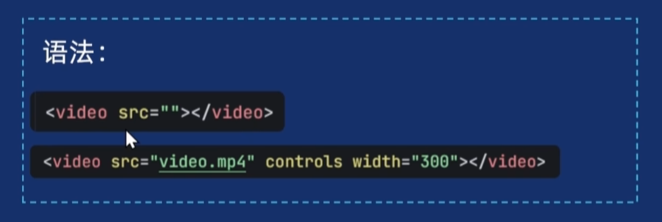
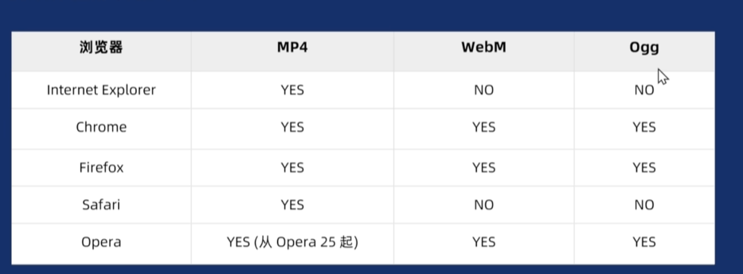
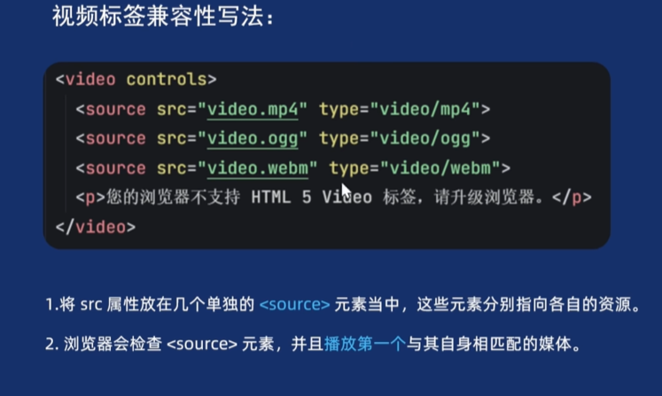
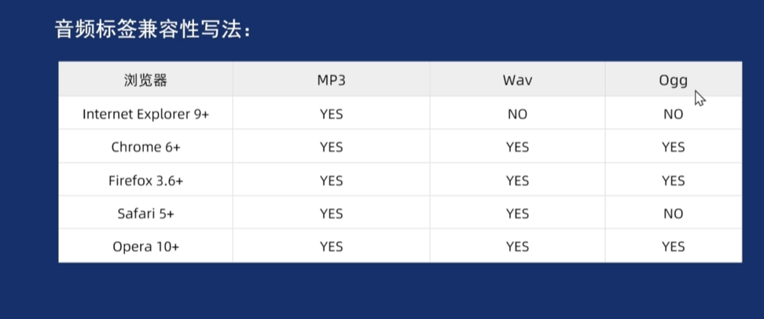

视频标签是由video元素来嵌入视频的

controls 显示浏览器自带的播放控件，再h5中，如果键和属性是相同的，则值可以省略
其他属性：
autoplay 自动播放
想要自动播放，需要先静音
loop 循环播放
muted 静音
poster 预览图像 =“路径”
兼容性


1.将src属性放在几个单独的
source元素当中，这些元素分别指向各自的资源
2.浏览器会检查source元素，并且播放第一个与其自身相匹配的媒体。
3.每个Source元素都含有type属性，浏览器也会通过如果你没有添加 type属检查性，浏览器会尝试加载每一个文件，直到找到一个能正确播放的格式，这个属性来迅速的跳过那些不支持的格式。

使用 audio标签 跟vidio差不多